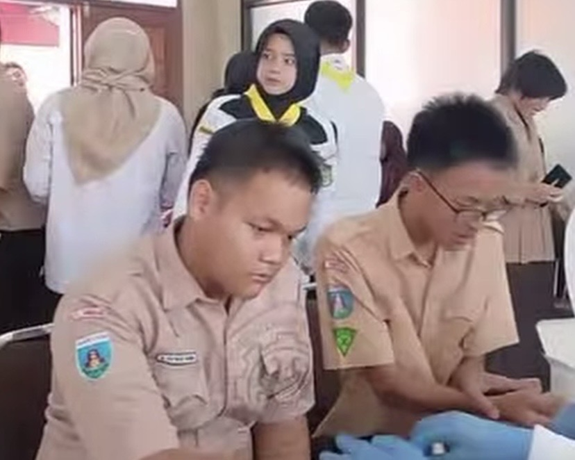

|
Website ZivankaAll About Me.
|
|
| Beranda | Tentang Saya | Sekolahku | Syair Lagu | |
Cek Kesehatan GratisRabu, 23 September 2026 SMKN 1 Tangerang bekerja sama dengan Puskesmas Sukasari menggelar kegiatan Cek Kesehatan Gratis (CKG) di lingkungan sekolah pada Rabu (23/9/2026). Kegiatan ini ditujukan bagi seluruh siswa kelas X, guru, serta tenaga kependidikan. Pemeriksaan kesehatan ini dilakukan sebagai langkah deteksi dini dan pemantauan kondisi fisik warga sekolah. Adapun rangkaian cek kesehatan meliputi pemeriksaan antropometri (tinggi dan berat badan), cek penunjang, hingga pemeriksaan kesehatan berkala lainnya untuk memastikan kondisi tubuh tetap prima dalam mendukung aktivitas belajar mengajar. Pihak SMKN 1 Tangerang menyampaikan bahwa pemeliharaan kesehatan siswa, khususnya kelas X yang baru beradaptasi dengan lingkungan SMK, sangat penting untuk mendukung produktivitas mereka. Selain pemeriksaan fisik, tim medis dari Puskesmas Sukasari juga memberikan edukasi singkat mengenai pentingnya menjaga pola hidup bersih dan sehat (PHBS) di sekolah. Kegiatan ini mendapat antusiasme yang tinggi dari para siswa dan guru. Melalui kolaborasi rutin dengan instansi kesehatan setempat, SMKN 1 Tangerang berkomitmen untuk terus menciptakan lingkungan sekolah yang sehat, aman, dan kondusif bagi seluruh warganya.  |
Tautan eksternal |
| © Zivanka Herdiansyah Putri, 2026. | |